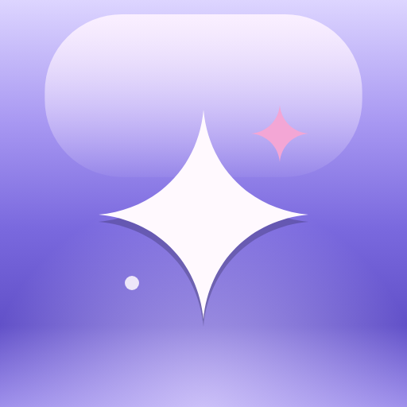

desktop app
The Tauri v2 wrapper for Windows and Linux. It loads the same web UI from your server and adds window chrome, a mini player, a tray and OS media controls. Decisions and sizes are in DESKTOP.md; windows on this board are drawn at true size and scaled to fit.
windows 11
No native title bar: the app header is the title bar. Caption buttons sit flush in the top-right corner; the header, its spacer, the rail head and the 16 px top margin are drag regions. The OS still draws the 1 px border, rounded corners and shadow (shadow: true).
- Snap: drag to a screen edge, Win+arrows and Win+Z all work. The Snap Layouts flyout on hovering Maximise needs a native hit-test overlay that core Tauri v2 doesn't provide; accepted for v1.
- Maximised, the window loses its corners (the frame above squares them when you press Maximise); nothing in the layout moves.
dragDropEnabled: false, or Windows swallows HTML5 drag and drop (row drags, M3U and skin drops).
linux
Native decorations by default, so GNOME and KDE users get the buttons and layout their desktop sets. A "Use lull title bar" setting (off by default, restart to apply) turns the app header into a GNOME-style header bar.
button-layout (here GNOME's default, close only).- Wayland: the compositor places windows, so only window size is restored, and "always on top" for the mini player is the user's call (window menu).
- The window title the OS shows is the page title ("Home - lull").
mini player
Frameless, transparent, always-on-top windows. The device window's shape is the handheld itself, stack included; the striped backdrop stands in for whatever is behind it on the desktop. Drag by the body or bezel, never the screen (the waveform seeks). Every control works here.
- Opened from the tray ("Mini player"), the device button in the player bar, or Ctrl+Shift+M. The full window hides while a mini window shows.
- Windows:
transparent: true,shadow: false(an OS shadow would outline the rectangle). Linux needs a compositor; otherwise the opaque fallback.
tray
A monochrome mark: the app icon's rounded square, solid, with the lull sparkle cut out. Windows picks the light or dark glyph from the taskbar theme (not the app theme); Linux uses the symbolic SVG so the panel recolours it.
menu (native menu, styled by OS)
Same items and order everywhere; the OS draws them. Windows: left click shows or hides the window, right click opens this. Linux: clicks aren't delivered, so the menu opens on any click and holds every action. Click an item to see the event the web UI gets.
Click a menu item.
first run: connect
A local page bundled in the wrapper (the server isn't known yet), built from the same tokens and the token gate's look with an address field on top. The status line has a fixed height, so states swap without moving the buttons. In the live window, Test reaches music.home.arpa; any other host is unreachable and a token under 12 characters is rejected.
idle
testing
connected
unreachable
token rejected
address not valid
server unreachable at launch
Also a local page: the web UI can't load, so the wrapper shows this and retries with backoff (2, 4, 8, 16, 30 s). The tray says "Not connected" and its transport items are disabled. Once the app is loaded, a dropped server is the web UI's own banner instead.
close to tray
Closing the window keeps the music playing when a tray exists. The first time, the web UI asks once. Without a tray (GNOME without the AppIndicator extension), Close quits.
app icons
From assets/app-icon.svg: a glossy lavender rounded square with the lull sparkle. 16, 24 and 32 are redrawn on the pixel grid (heavier edge, one sparkle, the pink accent only from 32 up) instead of scaled down. All files are in assets/icons/.

| Target | Files in assets/icons/ |
|---|---|
| Windows exe, installer | app.ico (16, 24, 32, 48, 64, 256) |
| Tauri bundle.icon | icon-32.png, icon-128.png, icon-256.png, app.ico |
| Linux hicolor | icon-16 to icon-512 PNGs, ../app-icon.svg (scalable), tray-symbolic.svg |
| PWA manifest | icon-192.png, icon-512.png, icon-maskable-512.png |
| Tray | tray-light-16/20/24/32.png, tray-dark-16/20/24/32.png, tray-symbolic.svg |